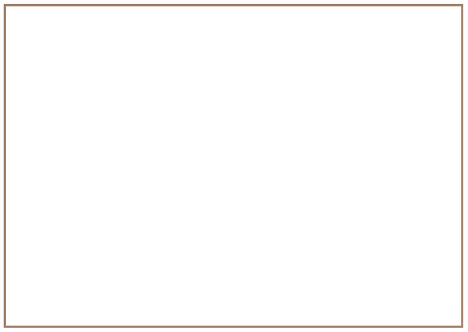

Mini-pat: ’n model van ’n selfoontoring
Hierdie hoofstuk is ’n formele assesseringstaak. Dit tel 70% van jou kwartaalpunt.
Oor die volgende ses en ’n half weke gaan jy ’n model van ’n selfoontoring ontwerp en bou. Om dit te doen, gaan jy deur die verskillende stadiums van die ontwerpproses werk. Van die werk sal binne ’n groep gedoen word, en van die werk sal jy op jou eie doen. Slegs die werk wat jy op jou eie doen, sal deur jou onderwyser geëvalueer word.
Week 1
Neem ’n paar besluite (30 minute)
Jou dorpie staan op die punt om uiteindelik selfoon ontvangs te kry. ’n Selfoonmaatskappy beplan om ’n selfoontoring op ’n heuwel langs jou skool te bou. Wanneer die toring voltooi is, sal die mense in jou dorpie in staat wees om selfone te gebruik. Hulle sal byvoorbeeld die dokter, die kliniek of apteker kan bel as hulle siek word. Almal is baie opgewonde en hulle kan nie wag om hul familielede wat ver woon te bel nie!
Van die mense is bang dat die toring dalk lelik gaan lyk. Hulle dink dat dit nie mooi sal lyk langs die skool nie. Dit sal nie by die omgewing inpas nie. Hulle sal ’n toring verkies wat nie soos ’n toring lyk nie.
-
Lees weer die storie bo die prent op die vorige bladsy en kyk dan na die prente van die ses verskillende selfoontorings in hoofstuk 10. Watter torings uit hierdie ses sal die mense van jou dorpie gelukkig maak?
-
Die selfoonmaatskappy stuur een van hulle werknemers na die dorpie. Hy praat met die dorpsmense om uit te vind wat die ontwerper in gedagte moet hou wanneer hy die toring beplan. Hy vra vir jou:
“Wat is die drie belangrikste dinge wat ek moet onthou wanneer ek die toring vir jou dorpie ontwerp?”
Jy kan begin deur te sê: “Die toring moet ..........................................wees.”
Jy kan ook dele van jou antwoord begin deur te sê: “Die toring moenie .................................... wees nie.”
Skryf jou antwoorde hieronder neer. Jy kan meer as drie dinge noem as jy wil.
Deur jou antwoorde op die vraag neer te skryf het jy begin om ’n ontwerpopdrag en spesifikasie vir ’n selfoontoring te skryf.
-
Kyk weer na die prent van die dorpie op die vorige bladsy. Waar dink jy moet die selfoontoring geplaas word? Besluit ook watter tipe toring dit moet wees, en maak ’n rowwe tekening van die toring op die regte plek in die prent op die vorige bladsy.
Die selfoonmaatskappy is op soek na idees vir die torings wat hulle kan bou. Hulle het jou hulp gevra. Jou taak is om ’n model van ’n selfoontoring te ontwerp en te bou.
- Jou model moet meer as 30 cm hoog wees.
- Dit moet ’n gelyk platform naby die bopunt van die toring hê. Op ’n werklike toring sal die tegnici bo-op hierdie platform staan wanneer hulle die senders en ontvangers by die bopunt van die toring installeer of herstel. Die platform op jou model moenie groter as 10 vierkante sentimeter wees nie.
- Die model moet inpas by die omgewing. Dit moet op een of ander manier gekamoefleer word.
- Die model moet met sterk materiaal gemaak word sodat die toring stabiel sal wees.
- Dit moet ook stewig wees en sy vorm behou.
- Jou model moet deur triangulasie versterk word.
- Jy kan enige gepaste boumateriaal vir die struktuur gebruik, soos optelmateriaal om jou huis. Voorbeelde is stywe riete, dun, reguit stokke of handgerolde papierspykers.
Dink na oor jou taak en maak ’n rowwe skets hieronder van hoe jy dink die toring moet lyk. Maak ook notas sodat jy later sal kan onthou wat jy vandag gedink het.
Skryf ’n ontwerpopdrag (30 minute)
Lees deur die situasie en die inligting op die vorige drie bladsye voordat jy die drie stelle vrae hieronder voltooi.
Kyk weer na hoofstuk 7 om jou geheue te verfris oor die betekenisse van die terme ontwerpopdrag, spesifikasies en beperkings.
-
Skryf die ontwerpopdrag.
-
Wat is die probleem? [1]
-
Wie sal bly wees oor die nuwe toring? [1]
-
Hoe sal dit hulle help? [1]
-
Skryf nou die ontwerpopdrag. Gebruik die antwoorde van die vrae wat jy sopas beantwoord het. Begin jou paragraaf met:
Ek moet die volgende ontwerp en maak: ... [2]
-
-
Identifiseer die spesifikasies.
-
Hoe moet die toring ontwerp word dat dit nie lelik lyk nie? [1]
-
Wat moet by die bopunt van die toring wees? [1]
-
Skryf nog ’n spesifikasie in jou eie woorde neer. [1]
-
Skryf nog ’n spesifikasie in jou eie woorde neer. [1]
-
Skryf nog een spesifikasie in jou eie woorde neer. [1]
-
-
Identifiseer beperkings.
-
Minstens hoe hoog moet jou model wees? [1]
-
Hoeveel gewig moet jou model in staat wees om te dra? [1]
-
Jy kan net materiale gebruik wat jy rondom die plek waar jy woon kan vind. Wat is hierdie materiale? [3]
-
Totaal[15]
Beplan vir kamoeflering en sterkte (60 minutes)
Daar is feitlik orals torings. Van hulle ondersteun elektriese kabels of telefoonkabels en hou watertenks van die grond af, terwyl ander, soos kerktorings, vir ons wys waarvoor ’n gebou gebruik word.
Baie mense dink dat torings lelik is. Om daardie te bedek of in te kleur sodat dit rede word torings bedek met plante en goed wat soos soos die omgewing sal lyk, en plante lyk. Dit word “kamoeflering” genoem.
Kamoefleerbeteken om iets te bedek of in te kleur sodat dit soos die omgewing sal lyk, en sodat dit sal inpas by die dinge colour something to make it look similar to, and fit in with, rondom dit.
Begin dink oor die model van ’n toring wat jy gaan bou. Beantwoord die vrae hieronder en maak ook op die volgende bladsy ’n rowwe skets met aantekeninge, sodat mense die antwoorde wat jy op die vrae hieronder skryf, kan verstaan.
-
Hoe sal jy jou toring kamoefleer?
Torings word ontwerp om stabiel, strek en stewig te wees.
- Iets is stabiel as dit nie omval of maklik inmekaarsak nie. Die teenoorgestelde van stabiel is onstabiel.
- lets is sterk as dit nie maklik breek nie. Die teenoorgestelde van sterk is swak.
- lets is stewig as dit nie maklik buig nie. Die teenoorgestelde van stewig is buigsaam.
-
Hoe sal jy seker maak dat jou selfoontoring stabiel is?
-
Hoe sal jy seker maak dat jou selfoontoring model sterk is?
-
Hoe sal jy seker maak dat jou selfoontoring model stewig is?
Maak jou skets hier:
Van die mense in die dorpie hou dalk nie van jou ontwerp nie. Dit sal ’n goeie idee wees om vir hulle ’n keuse te gee. Dink aan moontlikhede vir ’n ander ontwerp en maak hieronder ’n tekening met aantekeninge daarby om jou nuwe ontwerp te wys. Die nuwe ontwerp moet heeltemal van die eerste ontwerp verskil.
Week 2
Vergelyk en beoordeel ontwerpe (30 minutes)
Sluit aan by twee of drie ander leerders (nie meer as twee of drie nie). Wys albei jou ontwerpe.
Kyk na die ontwerpe van die ander leerders en vra vrae oor die gedeeltes van hulle tekeninge wat jy nie verstaan nie.
Maak voorstelle aan die ander leerders oor hoe hulle hul ontwerpe kan verbeter.
Maak aantekeninge van wat die ander leerders oor jou ontwerpe sê, sodat jy dit kan onthou as jy later probeer om jou ontwerp te verbeter.
Maak ’n paar aantekeninge hieronder.
Verbeter jou ontwerp (30 minute)
Besluit watter een van jou twee ontwerpe die beste is.
Kyk weer na jou aantekeninge om te sien wat jou klasmaats daaroor gesê het. Dink nou aan maniere om jou ontwerp te verbeter.
Om jou te help om te sien hoe jy jou ontwerp kan verbeter, vra jouself die volgende vrae:
Gaan die materiale te maklik buig?
Gaan die toring maklik omval?
Gaan die toring sterk genoeg wees om die platform aan die bopunt te ondersteun?
Gaan jy al die materiale hê wat jy nodig het om jou model te bou?
Kan jy aan ander vrae dink wat jou sal help om jou ontwerp te verbeter?
Dink ook terug aan wat jy in hoofstukke 8, 9 en 10 geleer het oor hoe:
- raamstrukture verstewig kan word om hulle sterker te maak en te keer dat hulle buig,
- hoe raamstrukture verhoed word om te tuimel,
- die belangrike eienskappe wat jy geïdentifiseer het toe jy torings ondersoek het, en
- die behoefte om visuele besoedeling te vermy.
Maak ’n lys van jou beplande verbeteringe hieronder. Jy kan ook ’n skets teken.
Leer om sterk voeë te maak (60 minutes)
Wanneer ’n struktuur nie die kragte wat daarop inwerk kan weerstaan nie, en dan nie meer sy doel sal kan verrig nie, dan sê mens die struktuur faal of swig. Daar is drie hoofredes vir struktuurswigting:
- Wanneer die ontwerp sleg is. As jy ’n emmer maak van té dun pastiek, kan die plastiek kraak vanwee die gewig van die water daarin. Die water sal dan deur die kraak uitloop, dus die emmer sal nie meer sy doel verrig om die water binne te hou nie.
- Wanneer die verkeerde materiale gebruik word. ’n Huis wat van strooi gemaak is, sal maklik kan wegwaai. ’n Huis wat gemaak is met stene van klei gemeng of van sementstene of klip, sal nie wegwaai nie.
- Wanneer die vakmanskap gebrekkig is . As die handvatsel van die pan waarin jy jou kos braai nie goed vasgesit is nie, sal dit afbreek. Swak vakmanskap kan maak dat jy jou hand verbrand.
Jy gaan nou leer hoe om sterk voeë te maak om jou te help om jou selfoontoring model te bou.
Werk in groepe van drie.
Julle het nodig:
- handgerolde papierstrooitjies,
- gom (julle kan julle eie gom maak gebruik die resep hier regs),
- draad,
- ’n dun stuk karton,
- kleefband of maskeerband, en
- ’n spyker of ’n els.
Tuisgemaakte gom
Bestanddele
1 koppie koekmeel
⅓ koppie suiker
1 ½ koppies water
1 eetlepel asyn
Metode
Meng die meel en suiker in ’n pot.
Voeg die helfte van die water by en roer.
Voeg die res van die water by en roer.
Voeg die asyn by.
Verhit dit totdat die mengsel dik en.
blinkerig word. Laat dit afkoel.
Kyk na die sketse op die volgende bladsy.
- Leerder 1 maak voeë A, B en E.
- Leerder 2 verbind die strooitjies, soos in C en D gewys.
- Leerder 3 verbind drie strooitjies met ’n karton hoekplaat van papier, soos in F gewys word.
Laat rus die voeë oornag, of langer, totdat alles droog is.
Jy sal weer na hierdie voeë terugkeer.
Werk versigtig met warm goed
soos ’n stoof en oop vlamme.
Gebruik ’n dik lap om te keer
dat jy jou hand brand.
As jy ’n brandwond opdoen, hou dit vir 20 minute in koue
water. Moenie enigiets in die brandplek invryf nie.


Veilige gebruik van gereedskap
Gebruik gereedskap vir die
doel waarvoor elke stuk gemaak is. ’n Skêr word
gebruik om mee te knip - vir niks anders nie
Dit is ook belangrik om gereedskap reg te gebruik. As
jy nog nooit ’n gereedskapstuk gebruik het nie, vra iemand wat
weet, hoe om dit te hanteer.
Hou gereedskap in goeie
werkende toestand en pak dit weg nadat jy dit gebruik het.
Week 3
Lys jou hulpbronne en maak ’n werkstekening (30 minutes)
Werk op jou eie.
-
Jy het reeds ’n ontwerp gemaak vir ’n selfoontoring. Kyk weer daarna. Maak ’n lys van alles wat jy nodig het om die model te bou.
Die gereedskap en materiaal wat nodig is om iets te bou word hulpbronne genoem.
-
Maak ’n werkstekening van jou model op die volgende bladsy. Jou tekening moet wys hoe die model van een kant af sal lyk. Gebruik ’n liniaal en wys afmetings. Die tekening moet die helfte so groot wees as wat die model sal wees. Voorsien jou tekening van byskrifte om die verskillende onderdele te wys. Wys waarvan die onderdele en die voeë gemaak is.
Maak jou werkstekening hier.
Vorm ’n span en kies ’n ontwerp (30 minutes)
Werk in ’n groep van drie. Besluit watter rol elke lid van die groep moet speel.
Bespreek elkeen van julle ontwerpe. Besluit watter ontwerp julle dink die beste is.
- Julle moet ’n ontwerp kies wat die groep kan maak. Kies die beste ontwerp of maak ’n nuwe ontwerp wat idees van elke lid van die groep gebruik.
- Dit is belangrik om ’n goeie tekening van die ontwerp te maak.
- Elkeen moet presies verstaan wat dit is wat die groep gaan maak voordat julle na die volgende stap kan aangaan.
- Onthou dat julle ontwerp ’n platform moet insluit waarop die werkers kan staan as hulle aan die bopunt van die toring moet werk.
- Een van die groepslede moet ’n skets van die nuwe idee op ’n skoon papiervel maak. Dit kan ’n rowwe skets wees. Dit moet wys watter materiale gebruik gaan word, en hoe die voeë sterk gemaak gaan word.
- Maak jou eie tekeninge van party van die voeë in die spasie hieronder. Maak ook ’n kopie van die tekening van die hele toring op die volgende bladsy.
Maak die tekening hier:
Beplanning vir die maakproses (30 minutes)
Voordat die praktiese werk begin, gebeur ’n hele klomp dinkwerk, beplanning en voorbereiding. Ons noem hierdie dinkwerk en bymekaarmaak van gereedskap en materiale voordat ons begin die beplanning vir die maakproses.
Teen hierdie tyd het jy besluit hoe jou model gaan lyk. Nou het die tyd aangebreek om te begin beplan hoe jy dit gaan bou.
Werk nou op jou eie. Hierdie werk gaan deur jou onderwyser beoordeel word.
-
Maak ’n lys van al die materiale wat jy beplan om vir die bou van jou model te gebruik. (2)
-
Maak ’n lys van al die gereedskapstukke wat jy vir die bou van jou model gaan gebruik. Onthou, selfs ’n spyker waarmee jy gate maak, kan ’n gereedskapstuk genoem word. (2)
-
Onthou om veilig met gereedskap te werk. Party gereedskapstukke kan gevaarlik wees as hulle nie reg gebruik word nie. Skryf ’n veiligheidsreël neer vir een van die gereedskapstukke wat jy gaan gebruik. (2)
-
Dink aan die volgorde van werk. Dit is die lys van al die stappe wat jy volg as jy die model maak. Hieronder is die eerste stap. Voeg nog stappe by. (4)
Stap 1. Rol strooitjies van afvalpapier.
Stap 2.
Stap 3.
Totaal [10]
Week 4
Bou die model
Dit is belangrik dat julle die model voltooi in die tyd wat aan hierdie taak toegestaan is. Maak seker dat julle presies verstaan hoeveel tyd julle vir elke stap het.
As julle nie betyds klaarkry nie, moet julle ophou sodra die tyd verstreke is, en met die volgende take begin - selfs al is julle model nog nie klaar nie.
Onthou om veilig en netjies te werk.
Onthou om vir elke lid van die groep, ’n taak of onderdeel van die model te gee om te bou. Julle kan mekaar help, of twee leerders kan saam werk. Elkeen moet ewe hard werk aan die bou van die model.
Pak julle model en onderdele aan die einde van elke les weg.
Hou die stukke bymekaar in ’n plastieksak of papiersak. Skryf julle name op die sak wat julle gebruik. Dit sal verhoed dat julle model se onderdele met dié van iemand anders deurmekaar raak.
Soms werk ’n ontwerp nie uit nie. Julle kan dinge by julle model voeg of daaraan verander sodat dit sal werk.
Moenie tyd mors nie. Dit neem dikwels langer om ’n voorwerp te maak as wat ’n mens dink.
Bou eers die toring sonder die platform.
Julle het hierdie periode en die volgende twee om dit te doen.
Kyk weer na die voeë wat julle vroeër gemaak het. Vra die volgende vrae:
- Watter voeë gaan julle maak?
- Watter voeë werk die beste?
- Watter een is die beste vir julle model?
- Watter materiale sal julle vir die voeë gebruik?
Besluit hoe julle toring geanker sal word.
- Gaan julle ’n raamstruktuur vir ’n basis maak?
- Wat gaan julle as fondament gebruik? Wat gaan julle gebruik: ’n stuk karton of polistireen?
- Gaan die toring omtuimel of sal dit in staat wees om die gewig van twee A5-handboeke te dra?
Week 5
Voltooi die bouery (30 minutes)
Julle het hierdie periode en die volgende een om julle model van die toring te voltooi.
- Maak seker dat die toring regop staan en nie omval nie.
- Bou die platform en heg dit aan die bo-punt van die toring model vas.
- Toets of julle toring die massa van twee A5-handboeke kan dra.
- Kamoefleer julle model. Moenie vergeet dat julle toring by die omgewing moet inpas nie.
Sodra julle klaar is, kyk deeglik na julle model.
Julle onderwyser sal die model evalueer. Totaal[40]
Is julle ongelukkig oor party van die toring se onderdele? Maak ’n lys van maniere om dit beter te maak. Gebruik die spasie hieronder.
Maak ’n 2d werkstekening (60 minutes)
Werk op jou eie. Elke leerder moet sy of haar eie tekening maak.
Maak ’n 2D werkstekening van die vooraansig van jou toringmodel.
Jou onderwyser sal jou tekening beoordeel.
As jy vergeet het hoe om werkstekeninge te maak, gaan terug na die werk wat julle in hoofstuk 2 gedoen het om jou geheue te verfris. Jy kan ook na die werkstekening van ’n watertenkvoetstuk op bladsy 182 kyk.
Jou onderwyser sal na die volgende aspekte van jou tekening kyk om aan jou punte toe te ken. Kyk dus na die lys hieronder en maak seker dat jy alles ingesluit het.
|
Kriteria vir werkstekeninge |
Merkie |
|
Die tekening het ’n opskrif. |
|
|
Die opskrif dui aan watter aansig van die model geteken is, naamlik die vooraansig. |
|
|
Die buitelyne van die tekening is donkerder as die afmetingslyne. |
|
|
Die afmetings is net een keer neergeskryf. |
|
|
Die afmetings is in millimeter geskryf. Jy hoef nie mm te skryf nie, want ontwerpers gebruik altyd millimeters op werkstekeninge. |
|
|
Alle afmetings is in die middel van die afmetingslyne geplaas. |
|
|
Daar is netjiese pylpunte aan die einpunte van jou afmetingslyne. |
|
|
Die tekening is netjies. |
Totaal [20]
Maak jou eie werkstekening van jou model van die selfoontoring op hierdie bladsy.
Voorbereiding vir beoordeling (30 minutes)
Volgende week gaan julle die ontwerpe van ander spanne en die torings wat hulle gebou het, beoordeel.
Om dit te doen, gaan julle ’n beoordelingsraamwerk opstel. Julle gaan die beoordelingsraamwerk gebruik om julle eie toring te beoordeel, asook die torings wat deur twee ander groepe gemaak is. .
In week 1 van die mini-PAT is daar aan julle inligting gegee wat julle vir julle ontwerpspesifikasies gebruik het. Gebruik nou hierdie inligting as jou beoordelingskriteria.
Kriteria is idees wat jy gebruik om iets te beoordeel of te evalueer.
-
Verander elk van hierdie kriteria in ’n vraag wat jy gaan vra, en skryf die vraag in die beoordelingsraamwerk hieronder. Werk as ’n span.
- Julle model moenie minder as 30 cm hoog wees nie.
- Dit moet ’n gelyk platform naby die bopunt van die toring hê. Op ’n werklike toring sal die tegnici bo-op hierdie platform staan wanneer hulle die senders en ontvangers by die bopunt van die toring installeer of herstel. Die platform op jou model moenie groter as 10 vierkante sentimeter wees nie. Julle sal ook twee A5-handboeke gebruik om te toets of julle toring sterk genoeg is om die radiosenders en radio-ontvangers te hou.
- Die model moet by die omgewing inpas. Dit moet op een of ander manier gekamoefleer wees.
- Die model moet van sterk materiale gebou word om dit stabiel te maak.
- Dit moet ook stewig wees en sy vorm behou.
- Julle model moet verstewiging deur die gebruik van triangulasie wys.
Kriteria
Goed
3Medium
2Swak
1 -
Werk op jou eie. Gebruik die beoordelingsraamwerk op die vorige bladsy om die toring wat jy en jou spanmaats gebou het te beoordeel.
-
Sluit by jou spanmaats aan en vergelyk julle beoordelings. Bespreek dit en probeer ooreenkom op die finale beoordeling.
-
Skryf jou vrae in die volgende twee tabelle vir beoordeling. Jy sal hierdie tabelle gebruik om die torings wat deur ander spanne gebou is te beoordeel.
|
Kriteria Model van span A |
Goed |
Medium |
Swak |
|
Kriteria Model van span B |
Goed |
Medium |
Swak |
Week 6
Beplan jou aanbieding (60 minutes)
Elke span moet ’n aanbieding oor hulle planne en model vir die res van die klas voorberei. Die aanbieding moet minstens drie minute lank wees, maar nie langer as vyf minute nie.
-
Beplan jou aanbieding.
- Al die spanlede moet praat oor die werk wat hulle gedoen het terwyl hulle die toring gebou het.
- Een leerder moet die ontwerpskets wys en verduidelik. Vertel aan die groep hoe julle beplan het om die toring by die omgewing te laat inpas.
- Een leerder moet praat oor die probleme wat die groep ondervind het.
- Een leerder moet praat oor hoe die groep die toring getoets het.
- Besluit wie eerste sal praat, en wie daarna.
-
Gebruik die spasie hieronder om aantekeninge te skryf van die goed wat julle gaan doen.
Wenke vir die aanbieding
Staan regop en kyk na die klas wanneer jy praat.
Moenie jou aanbieding aflees nie.
Praat duidelik sodat almal kan hoor.
Maak seker jy weet wanneer jou beurt is.
Hou by die tydsbeperking.
-
Oefen jou aanbieding. Bied dan jou aanbieding tydens die laaste periode van die week aan.
Geniet jou wintervakansie! Na die vakansie gaan jy dinge maak wat met elektrisiteit en magnete werk.